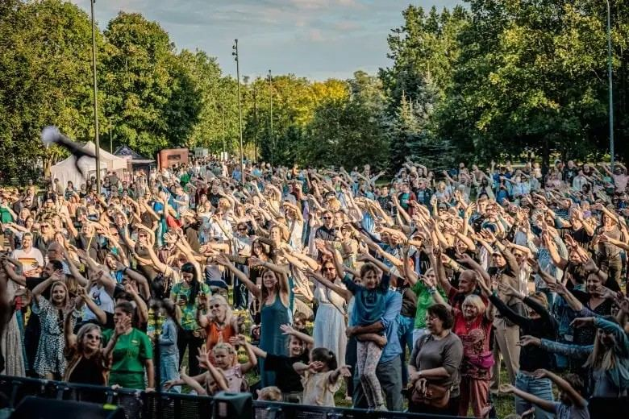

Festivals · Culture
Riga City Festival 2027
- Dates
- –
- Location
- Riga, Latvia
- Format
- In-person
- Category
- Culture
- Industry
- Culture
- Organiser
- Riga Investment and Tourism Agency
- Official website
- https://www.liveriga.com/en/11948/riga-s-birthday-celebrations
About
Dates are local civil dates in Latvia (Europe/Riga).
Topics: city festival, street performance, concerts, public celebration.
No organiser attendance figure found on the official pages fetched 24 Nov 2026. Ranked by our estimated size tier 'large' (30,000-100,000 attendees/visits), a judgement from format, venue and scale, not an official number.
Sources
- Official — https://www.liveriga.com/en/11948/riga-s-birthday-celebrations